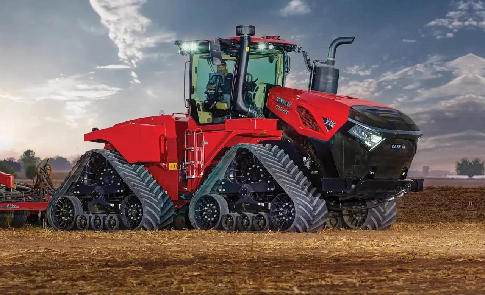

Paraná Tratores
- Beneficios do Agro
- Beneficios dos Maquinários
A agricultura de precisão da New Holland está revolucionando as lavouras. Com integração de tecnologias e sistemas avançados, fornecemos suporte e informações aos agricultores de forma remota e em tempo real. Com o MyNewHolland você pode ter acesso a esses recursos de forma simples e rápida.
